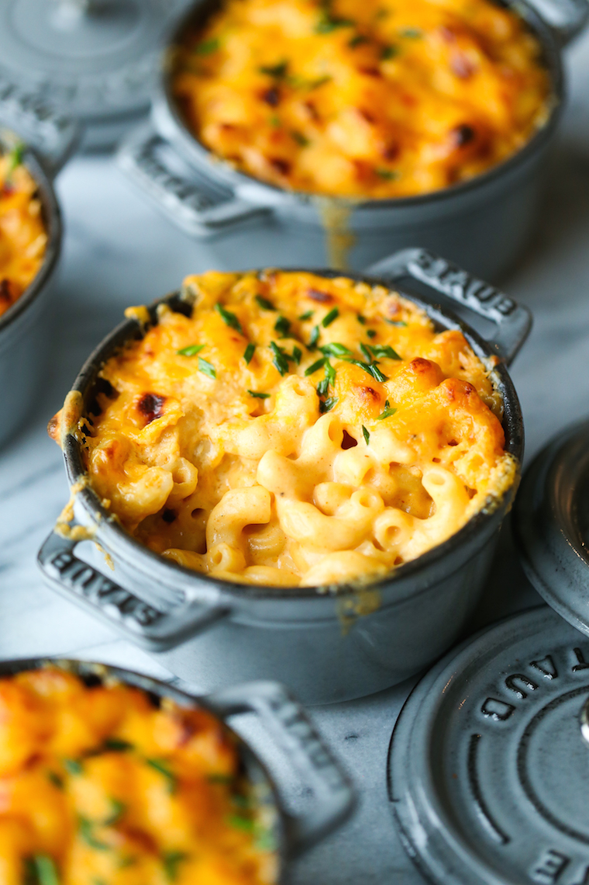

Description
Still the best Baked Mac and Cheese I've ever had in my life! Perfect in
every way, this has a stunningly white, ultra creamy cheese sauce with a
beautiful crunchy, buttery topping. Great one for serving at gatherings
because it won't dry out and go stodgy like most Macaroni Cheese recipes
because of the extra step of tossing the macaroni in butter (stops it
from bloating) and because it's extra saucy out of the oven.
Ingredients
Macaroni:
- 250g / 8 oz macaroni (elbow pasta)
- 1 tbsp (15g) unsalted butter (or 2 tsp oil)
Topping:
- 2/3 cup panko breadcrumbs (Note 1)
- 2 tbsp (30g) unsalted butter , melted
- 1/4 tsp salt
Sauce:
- 4 tbsp (60g) unsalted butter
- 1/3 cup flour , plain / all purpose
- 3 cups milk , warmed (low or full fat)
-
2 cups freshly shredded cheese, gruyere best (followed by cheddar and
Colby) (Note 2)
-
1 cup freshly shredded mozzarella cheese , or more other cheese of
choice (Note 2)
- 3/4 tsp salt
Seasonings (optional):
- 1 tsp garlic powder
- 1/2 tsp onion powder
- 1/2 tsp mustard powder
Steps
Pasta:
-
Cook pasta: Bring a large pot of water to the boil. Add macaroni and
cook per packet directions MINUS 1 minute.
-
Toss in butter: Drain, return pasta to pot, add butter and toss until
melted. Set aside to cool while making the Sauce (Optional - Note 3).
Topping:
- Mix together Topping. Set aside.
Sauce:
- Preheat oven to 180°C/350°F (all oven types).
-
Make roux: In a large saucepan or in an ovenproof skillet (I use my
26cm/9" Lodge cast iron skillet), melt butter over medium heat. Add
flour and cook, stirring constantly, for 1 minute.
-
Add milk: Add about 1 cup of the milk and mix to dissolve the paste
into the milk. Then add remaining milk and mix until lump free (use
whisk if required).
- Add Seasonings: Mix in salt and Seasonings if using.
-
Thicken sauce: Cook, stirring/whisking regularly, for 5 - 8 minutes
until thickened to a cream consistency. When the Sauce coats the back
of a wooden spoon, you should be able to draw a path with your finger.
-
Add cheese: Remove from stove, add cheese and stir - cheese doesn't
need to melt.
-
Check salt: Adjust salt to taste (if you use recommended cheeses, you
won't need more).
Assembling:
-
Assemble: Pour Sauce into pot with Macaroni. Stir quickly, then pour
back into the skillet (I did this) or a baking dish (Note 4). Sprinkle
with breadcrumb topping.
-
Bake for 25 minutes or until top is light golden. Don't bake too long
otherwise you'll bake away the Sauce!
-
Serve: Serve immediately! I sprinkled mine with a bit of fresh
parsley. See notes for best make-ahead method.
Notes
-
Panko breadcrumbs are larger pieces than normal breadcrumbs which
creates a really nice extra crunchy topping. It can be found in the
Asian section of supermarkets here in Australia. Can sub with normal
breadcrumbs.
-
Cheese
-
Main Cheese (2 cups) - my favourite is gruyere (used in video),
for flavour and melting quality. Can use any flavoured melting
cheese. Other cheeses I like for this include: cheddar, Monterey
Jack, Colby, provolone. (Australia/NZ: Tasty cheese works & super
tasty but sauce is not quite as smooth);
-
I like to use mozzarella for the 2nd cheese (1 cup). It melts
really well into the sauce, has that nice stretch, and isn't as
oily like other cheese can tend to be. Also, it's less salty.
However, you can just use more of the Main Cheese.
-
Always grate your own cheese for cheese sauces. Store bought
shredded cheese have anti caking agents which don't melt so can
give the sauce a slight powdery texture.
-
SALTINESS of cheeses vary so if you use another cheese other than
gruyere for the Main Cheese that is much less salty (eg
Jarlsberg), you may need to add a pinch or two of extra salt into
the sauce. Taste and check! Most cheeses are of similar salt
levels though.
-
Tossing pasta with butter provides a light coating that helps prevent
it from bloating while baking in the sauce. This is also the reason
why I let the pasta cool before mixing in with the sauce. Optional
step - can skip it.
-
Baking dish size - 2.5L/2.5qt (10 cup) baking dish. A 9 x 13" / 23 x
33 dish is perfect for a double batch, a little too big for a single
batch (spreads too thinly, you want more depth).
-
PREPARE AHEAD: Mac and Cheese is best made fresh but if you need to
make ahead, this is the best way: Cook pasta and toss in butter, cool
(this is important as hot pasta will absorb sauce and bloat). Make
cheese sauce per recipe, mix through pasta, sprinkle on breadcrumb
topping. Refrigerate or freeze (thaw fully in fridge before baking).
Cover with foil and bake 15 minutes at 180°C/350°F. Remove foil then
bake further 25 minutes until top is golden. (Fridge cold Mac & Cheese
takes longer to bake).
REHEATING LEFTOVERS: Best way is to microwave to make warm then
spray top with oil (or butter) and crisp under grill/broiler.
-
Nutrition per serving. 6 servings as a generous side - you will be
surprised how far 250g/8oz stretches with a load of cheese sauce! Will
serve 4 generously as a main.
Back to List of Recipes